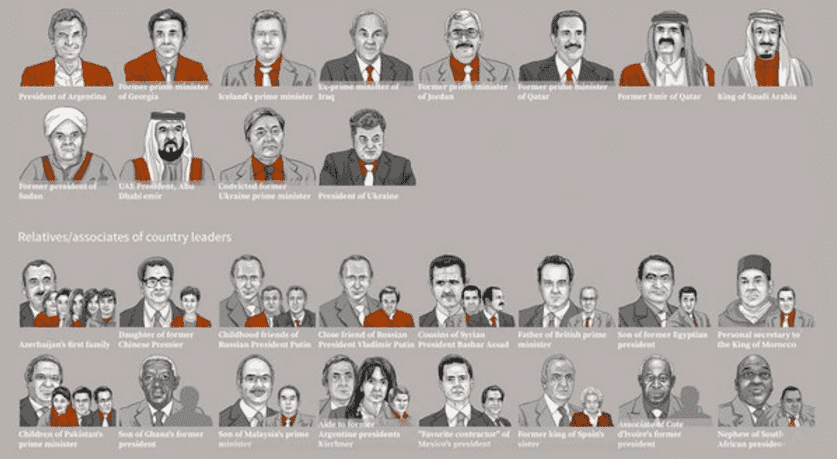
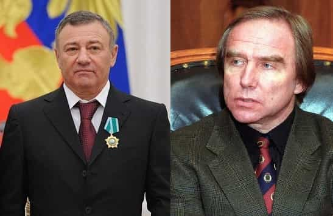
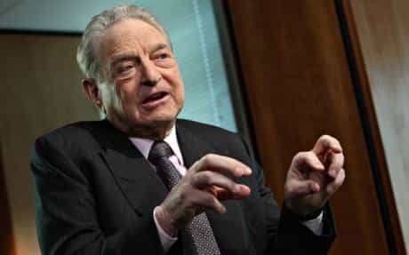
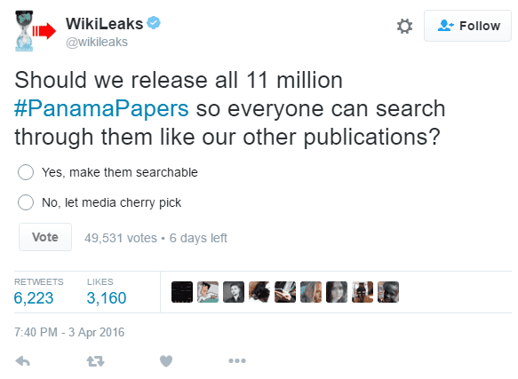
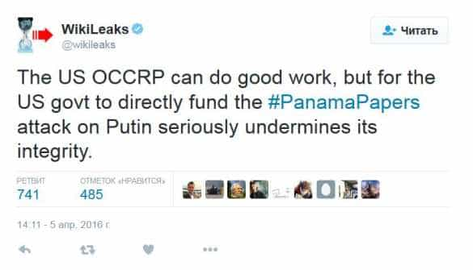

< < < Back
Why Is The Media’s Reporting On The Panama Papers So Focused On Vladimir Putin? – Return Of Kings
Unless you have been living under a big rock for the last few weeks, you have probably heard of the Panama Papers, documents that mysteriously found their way into the hands of the German daily Sueddeutsche Zeitung, member of particular Western media group that we will focus on a bit later.
The files allegedly “leaked” from the fourth biggest offshore law firm in the world, Mossack Fonseca. Among the names present in the documents, 12 national leaders and 143 politicians, their families and close associates from around the world known to have been using offshore tax havens.

The use of offshore business entities is not illegal when they are regimented and follow the jurisdictions in which they are registered. But the investigation reporters apparently found that some of the companies may have been used (the investigation is still pending and just like for those propagating rape culture, unfortunately, an accusation is not a proof of guilt) for illegal purposes, including fraud, drug trafficking, and tax evasion.
The one in the crosshairs
But interestingly, only one face has been plastered all over the news. Who, among the world leaders, embodies the nemesis of the gay-friendly, feminized, globalist scheming Left?

And we have a winner!
So why this organized kabbala against Vladimir, absent from the papers, and the clemency shown towards the Saudi Arabian king, the Ukrainian president, or the UK’s Prime Minister? Many factors can explain it: his refusal to bow under Western hegemony, his refusal to adopt the gay-friendly, multicultural agenda imposed by leftists’ standards, his protection of the interests of his country against foreign investors. The list is quite long.
What interests us here is the incredible media bias that is at play here and that has become too regular lately, not verifying information or cherrypicking it for more clicks and following the plans of their employers. It proves once more that impartiality and reporting facts is not a priority or a duty. The reporters obey to masters, follow an agenda and must have quotas and targets.
A few facts
In contradiction with speculations on the Panama Papers, here are a few interesting facts:
- Western media (list detailed later in the article) speak of Putin’s “best friend(s)”, “inner circle” but are covering the headlines with his own picture, often ignoring prominent figures who are present in the Panama Papers
- The leaked material includes 4.8 million email messages, 1 million images, and covers 40 years of the operations of the Panama-based law firm Mossack Fonseca, starting in 1977 — with 14,000 clients and 214,000 companies named in the files. In the “groundbreaking” parts released to the public, the name of Vladimir Putin is not mentioned once.
- There are no US or American political figures, citizens of the first global economical power, involved in the leak.
- Mossack Fonseca partner, Mr Ramon Fonseca, also reported that the documents, taken out of context, according to him, have not been leaked as advertised, but stolen. Washington, on its side, does not really know if the leak was data-theft or not. They also could not say if there was a difference between the Panama Papers leak and the documents disclosed by Wikileaks, that they consider a crime and an act of treason and theft.
- The reports have been “leaked” over a year ago and kept in the greatest secrecy. International “journalists” supposedly “compiled it” together to give it to the public. For the “groundbreaking leak of the century”, that is a hell of a suspense builder.
The two persons described as “Putin’s inner circle” and “best friends”

Arkady Rotenberg (left) and Sergeï Roldugin (right)
Mentioned in the Panama Papers and described as Putin’s “brothers” or “best friends,” billionaire Rotenberg and his brother (blacklisted by the USA) know Vladimir Putin because they practiced Judo together in the 60’s. Roldugin, a famous cellist, met Putin in the 70’s and is the godfather of his daughter. Who is one’s best friend? I can count my friends on one hand. Only a man himself can tell who his best friend really is in his close knit community.
How can the media, who lately do not investigate thoroughly and is satisfied with only pointing fingers, know who Putin’s “best friend” is? Would one of the most powerful man in the world would mix friendship and business, and entrust his money to a musician?

Meanwhile, Vova does not give a hoot
Men eat together, hang out, or do business with people that are not their friends. But onlookers could think so. As they shake each other’s hand and are courteous to one another, in our new sanitized world, any physical mark of politeness is considered abnormal. In this world of sharks and traitors, Putin has probably not more than a couple of “true” friends, that do not care about his power or money. They are certainly not dealing with his fortune. But he has legions of vultures, lapping at his feet to receive crumbs of his wealth.
The David Cameron case
Let’s take the case of Mr Cameron, neck deep in the Panama papers, as it is his own father who sorted out his piggybank with the firm Mossack Fonseca. Dave first denied, then changed his mind, then confessed, then vowed to be the champion of the UK’s fight against tax evasion. Bit too late, Dave?

English sunburn or blush of the liar’s guilt?
Here it is not an hypothetical “best friend,” but rather someone that has a direct blood link to the accused. His own flesh. Nothing is stronger than blood ties. But strangely, the British Brainwashing Cloaca, also known as the BBC, did not mention him until very recently in the Panama Papers scandal. Nor did the leftist Guardian. Even with their own head of state involved, the only picture you find in the article depicts Putin.
In a Hail-mary bid to try to justify himself, Cameron publicly published his “accounts” after a statement at the House of Commons. his line of defense was “Yes, I did it a bit. But everyone does it too”.
We do not want to see your tax files, David. If you show us what you want us to see, you won’t choose incriminating papers. A man won’t present the stick he will be beaten with. Just like the beta male displaying the freshly cleared, almost virginal browser history after a 12-hour one-handed porn binge, with his face still red, Cameron has “liar” seared on his forehead.
He also asserts that he does not have “any offshore accounts or funds since 2010.” Strange coincidence that his dad, the one running the accounts, died the same year. The 3 to 30 million dollars (to be determined) fund is still active. Who calls the shots? Who is enjoying it? I’d be curious to see David Cameron publishing the same kind of accounts for his three other siblings.
We don’t want to see what you willingly show us. If we want to uncover the truth, we want to see what an exterior authority (a court) orders you to show, such as your father’s accounts and who he transferred his money to.
The Shadow of Soros looms all over it

As usual, he has all his dirty little fingers in a lot of dirty little pies. For the few of you sleeping at the back of the classroom who do not know, George Soros is born Schwartz Györgi, a US-Hungarian business investor, magnate and billionaire which focuses on investing his fortune and influence into “progressive” and liberal causes such as:
- The “defense of human rights, especially the rights of women, ethnic, racial, and religious minorities, drug users, sex workers, and LGBTQ communities”
- “Developing democracy in Eastern Europe and the former Soviet Union”
- The “promotion, in the USA, of reforms in criminal justice, drug policy, palliative care, education, immigration, equal rights, and democratic governance
- The “advancement of the rights of Roma communities in Europe”
- The Black Lives Matter movement
- Anything that prevents Donald Trump from being elected President
- The French Collective Against Islamophobia and the Open Society Justice Initiative, which invented the catchphrase “contrôle au faciès” (“features-related control”) to throw as an accusation on any police constable that searches Non-native French suspects.
- The OTPOR organization, dissident group that tried to bring down the Milosevic regime in Serbia
- The CANVAS “non-violent” organization, leading various seminar to teach people how to bring down sovereign governents, like it did in Georgia, Ukraine, Egypt, The Maldives and others. Many of the leaders of the “Arab Spring” received training from CANVAS.
And many, many others. Is Mr. Soros advancing his pawns, trying to castigate Putin and his country, in order to start his own “Cold War 2.0”?
Only a certain group of people wants to impose “vibrant” additions to Western nations
Incidentally, Soros’ activities in Russia are not very popular. As Russian channel RT puts it :
Organizations belonging to Soros have been proclaimed to be “undesirable” in Russia. Last year, the Russian Prosecutor General’s Office recognized Soros’s Open Society Foundations and the Open Society Institute Assistance Foundation as undesirable groups, banning Russian citizens and organizations from participation in any of their projects.
Prosecutors then said the activities of the institute and its assistance foundation were a threat to the basis of Russia’s constitutional order and national security. Earlier this year, the billionaire US investor alleged that Putin is “no ally” to US and EU leaders, and that he aims “to gain considerable economic benefits from dividing Europe.”
He is also the one behind the No Border group which smuggles illegally legions of migrants in the recent European invasion crisis and the author of the delightful sentence “National borders are the enemy”.
The puppeteer’s curtain is not thick enough to hide him
Wikileaks have indeed confirmed that the whole Panama Papers leak was organized by Washington and Soros, who had the info in their possession. It was just kept handy to strike at the ones that bother their plans.
The main organizations between the leak are the OpenSociety/Soros funded OCCRP (Organized Crime and Corruption Reporting Project), which has, despite its ominous name, no juridical weight or power.
The main media sources and partners relaying the info and focusing on Putin’s hypothetical involvement are part of the ICIJ syndicate.

The ICIJ (International Consortium of Investigative journalism) backed by the Center for Public Integrity, is also the one that Wikileaks accuses of bias, directing the fire on Putin and almost forgetting the others incriminated. They did not wait long to start a cut-throat competition:


But who are exactly the ICIJ? According to their page (emphasis theirs):
Founded in 1997 by the respected American journalist Chuck Lewis, ICIJ was launched as a project of the Center for Public Integrity to extend the Center’s style of watchdog journalism, focusing on issues that do not stop at national frontiers: cross-border crime, corruption, and the accountability of power.
Why we exist
The need for such an organization has never been greater. Globalization and development have placed extraordinary pressures on human societies, posing unprecedented threats from polluting industries, transnational crime networks, rogue states, and the actions of powerful figures in business and government.
The news media, hobbled by short attention spans and lack of resources, are even less of a match for those who would harm the public interest. Broadcast networks and major newspapers have closed foreign bureaus, cut travel budgets, and disbanded investigative teams. We are losing our eyes and ears around the world precisely when we need them most.
What we do
ICIJ projects are typically staffed by teams ranging from as few as three to as many as 100-plus reporters spread around the world. These journalists work with counterparts in other countries and with our Washington, D.C., staff to report, edit, and produce groundbreaking multimedia reports that adhere to the highest standards of fairness and accuracy.
Over the years, our teams have exposed smuggling by multinational tobacco companies and by organized crime syndicates; investigated private military cartels, asbestos companies, and climate change lobbyists; and broke new ground by publicizing details of Iraq and Afghanistan war contracts.
In other words, it is little more than a tabloid organization, with an agenda with globalism, ignoring national sovereignty and looking for scandals to smear on their opponents, under the guise of a Robin Hood-esque “investigative journalism.”
I will not expand on how their patron organization’s logo is a Doric column, symbol of American secularism and Freemasonry. The Doric column is associated with the Senior Warden in the Masonic Order.

If I were you, I would from now on, cross all those newspapers from the already microscopic list of “reliable sources of information”.
This is not the complete list of papers working with Soros-backed ICIJ. You can find the complete list here
En bref
The fact that the ones behind the scenes waited for more than a year to release this nuke of an info shows that they are truly running out of options to hurt the ones that don’t follow the plan. But rest assured that no quarter will be given and that they will not spare any options. Even if that means sacrificing allies such as ISIS-supporting Saudi Arabian King, Western puppet Porochenko or multicultural poster boy Cameron.
By doing this, they throw out the baby with the bathwater. Next steps can only be coup d’états or assassination. Once more, the media weapon exposes what their masters want them to disclose, and ignore what is inconvenient.
Read More: Why Vladimir Putin Is Russia’s Proto-Tsar